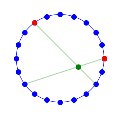

1. Introduction
This post belongs to a new series of posts where I intend to face the challenge of drawing both static and dynamic pictures with a programming language. This practise is commonly referred to as code art, where art is built with code.
The first four posts will aim at defining a function to create a geometric pattern, a spirograph pattern in circle, inspired by this video, with Python libraries.
We will follow these steps:
- Problem definition and visualization basics in Part1.
- Line definition through two points and intersection of two lines in Part2.
- Polygon vertex detection and postprocessing of intersection points Part3.
- Polygon drawing, colour scheme definition, global function implementation and final drawings in Part4.
2. Define the line through two points
If you have two points, A and B, you can treat them as two vectors and determine the vector connecting A to B, $\vec{AB}$:
$$ \vec{AB} = \vec{B}-\vec{A} = $$
$$ = (x_B, y_B) - (x_A, y_A) = (x_B-x_A, y_B-y_A) $$
Then the parametric equation of the line through these two points is:
$$ P = t\cdot\vec{AB} + \vec{A}, where t \in (-\infty, \infty) $$
The generic point P on the line is controlled by the only parameter of this equation t, which can also be associated to the time.
There are five macro situations:
t=0: the point coincides to point At=1: the point coincides to point Bt<0: the point lies ahead of A0<t<1: the point lies between A and Bt>1: the point lies behind B.
If we unpack the vector formulation into two scalar equations, we end up with:
$$ (x, y) = t\cdot(x_B-x_A, y_B-y_A) + (x_A, y_A) $$
$$ x = t\cdot(x_B-x_A) + x_A $$
$$ y = t\cdot(y_B-y_A) + y_A $$
If the system is reduced to one equation by substituting t from the second equation into the first equation, we get the implicit line equation.
Whenever one of the two equations have got no t, either x = k or y = k, there is no need to change anything, the implicit equation is already there!
The former case would be a vertical line passing through (k, 0), the latter case is a horizontal line through the point (0, k).
Some references can be found on the Wolfram website and on Wiki.
3. Define the intersection of two lines, each given a pair of points
3.1 Parametric method
In this case we have four points, A, B, C and D, and two vectors or segments, $\vec{AB}$ and $\vec{CD}$.
The first line, which crosses both points A and B, is given by the following vector equation:
$$ L_{ab} = t\cdot\vec{AB} + \vec{A},\quad t \in (-\infty, \infty) $$
The second line crossing points C and D is instead given by this equation, where the parameter u plays the same temporal role as t:
$$ L_{cd} = u\cdot\vec{CD} + \vec{C},\quad u \in (-\infty, \infty) $$
We need to find the relative time of the two lines, t and u, at which they intersect each other:
$$ L_{ab} = L_{cd} $$
$$ t\cdot\vec{AB} + \vec{A} = u\cdot\vec{CD} + \vec{C} $$
Now we cross both sides with $\vec{AB}$:
$$ (t\cdot\vec{AB} + \vec{A})\times\vec{AB} = (u\cdot\vec{CD} + \vec{C})\times\vec{AB} $$
Here a picture from main Wiki page that should help clarifying the cross product. The area confined by the parallelogram defined by the two input vectors is the module of the output vector. Direction is perpendicular to the plane containing the two vectors and sense of direction is given by the right-hand rule.


Since the self cross-product of a vector is the zero vector $\vec{\mathbf 0}$, it simplifies to:
$$ \vec{A}\times\vec{AB} = (u\cdot\vec{CD} + \vec{C})\times\vec{AB} $$
$$ (\vec{A}-\vec{C})\times\vec{AB} = u\cdot\vec{CD}\times\vec{AB} $$
$$ \vec{CA}\times\vec{AB} = u\cdot\vec{CD}\times\vec{AB} $$
The first condition to mention here is that:
$$ \vec{CD}\times\vec{AB} = 0 $$
It implies that the two segments are either parallel or collinear. We need to treat such conditions in a proper way.
Let’s just assume here that they are none of them, so one intersection exists, for which u is defined as:
$$ u = (\vec{CA}\times\vec{AB})/(\vec{CD}\times\vec{AB}) $$
Please note that the cross product of two 2D vectors is a 3D vector whose first two entries are 0 and the last one is the actual cross product:
$$ (w_x, w_y)\times(u_x, u_y) = (0, 0, w_x\cdot u_y - w_y\cdot u_x) $$
The ratio of these two cross products is therefore a standard scalar ratio.
If we apply the same procedure by crossing with $\vec{CD}$:
$$ t = (\vec{AC}\times\vec{CD})/(\vec{AB}\times\vec{CD}) $$
Since the cross product is anticommutative, i.e., $\vec{A}\times\vec{B} = - \vec{B}\times\vec{A}$, it returns the same expression as for u where $\vec{CD}$ replaces $\vec{AB}$ in the numerator:
$$ t = (\vec{CA}\times\vec{CD})/(\vec{CD}\times\vec{AB}) $$
The final expression for the intersection I, if there exists any, is:
$$ I = (\vec{CA}\times\vec{CD})/(\vec{CD}\times\vec{AB})\cdot\vec{AB} + \vec{A} $$
There are two additional conditions that need to be handled.
The two segments are:
1. collinear, where $(\vec{CD}\times\vec{AB}) = 0$ and $(\vec{CA}\times\vec{AB}) = 0$. This condition translates to the fact that AB is parallel to both CD and CA, which implies they lie all on the same line.
2. parallel but not-intersecting, where $(\vec{CD}\times\vec{AB}) = 0$ and $(\vec{CA}\times\vec{AB}) \neq 0$.
def intersectVis(xI, yI):
plt.figure(figsize=(figSize, figSize))
circle = plt.Circle((0, 0), radius, color='b', fill=False)
plt.plot(xPs, yPs, ls='', marker='o', markersize=10, color="blue")
plt.plot([xA, xB], [yA, yB], ls='', marker='o', markersize=10, color="red")
xP, yP = xPs[idxA], yPs[idxA]
plt.plot([xA, xP], [yA, yP], color="green", lw=2, alpha=.3)
xP, yP = xPs[idxB], yPs[idxB]
plt.plot([xB, xP], [yB, yP], color="green", lw=2, alpha=.3)
plt.plot([xI], [yI], ls='', marker='o', markersize=10, color="green")
ax = plt.gca()
ax.add_artist(circle)
ax.get_xaxis().set_ticks([])
ax.get_yaxis().set_ticks([])
ax.axis('off')
ax.axis('equal')
ax.axis([-margin, margin, -margin, margin]);
idxA, idxB = 12, 18
AA, BB = np.array(Pa), np.array([xPs[idxA], yPs[idxA]])
CC, DD = np.array(Pb), np.array([xPs[idxB], yPs[idxB]])
AB = BB-AA
xI, yI = np.cross(AA-CC, DD-CC)/np.cross(DD-CC, AB)*AB+AA
intersectVis(xI, yI)

3.2 Homogeneous method
The implicit equation of a line is:
$$ L: a\cdot x + b\cdot y + c =0 $$
If a point P=(x,y) lies on that line, then the dot product between the line coordinates $(a,b,c)$ and one possible set of homogeneous coordinates of the point P $(x, y,1)$ is 0 by definition:
$$ a\cdot x + b\cdot y + c =0 $$
$$ \quad\Rightarrow (a,b,c)\cdot(x,y,1)=0 $$
By definition, a given point $(x, y)$ on the Euclidean plane, for any non-zero real number $z$, is the projection of the triple $(z\cdot x, z\cdot y, z)$, which is called a set of homogeneous coordinates for the point. It can be visualized as a 3D line through the origin and point $(x, y,1)$. The corresponding point is obtained by slicing such a 3D line with a horizontal plane 1 unit above the origin, whose equation is $z=1$, and by projecting such intersecting point to the 2D space ($z=0$).
If we extend the concept to multiple points of one line $L$, we get a 3D plane that passes through the origin and line $L$ shifted upward by 1 unit. The plane coordinates $(a,b,c)$ from the implicit plane equation $a\cdot x + b\cdot y + c\cdot z =0$ represents a vector perpendicular to such a plane. Such a vector representing the plane in the homogeneous space and the line in the Euclidean space can be generated as a cross product of the two vectors representing two points of the line in the homogeneous space. Indeed, the plane contains these two vectors, since the underlying line contains the corresponding points, and the cross product of two vectors is a vector whose direction is perpendicular to the plane containing the vectors themselves.
This means that we can get the vector representation of a line by taking the cross product of two points on that line, expressed in homogeneous coordinates.
$$ L_{ab}: (a, b, c) = \vec{A^H}\times\vec{B^H} $$
where $\vec{A^H} = (x_A, y_A, 1)$ is the homogeneous coordinates of point A.
Interestingly, the homogeneous coordinates of the intersection point $P_I$ of two lines $\vec{L_1}$ and $\vec{L_2}$ is then simply got by taking the cross product of the line coordinates.
$$ P_I^H = (x_I^H, y_I^H, z_I^H) = \vec{L_1}\times\vec{L_2} $$
$P_I^H$ is perpendicular to the plane vector \vec{L_1}, so it lies on the plane itself of line $L_1$. It means it represents the homogeneous coordinates of a point that lies on line $L_1$. In a similar fashion, it is also perpendicular to the plane vector \vec{L_2}, so it represents a point on line $L_2$ as well. It is therefore the intersection of the two lines.
If $z_I^H \neq 0$, the intersection point is converted to Euclidean coordinates as:
$$ P_I = \big(\frac{x_I^H}{z_I^H}, \frac{y_I^H}{z_I^H}\big) $$
homCoords = np.hstack((np.vstack([AA, BB, CC, DD]), np.ones((4, 1)))) # homogeneous coordinates
line1 = np.cross(homCoords[0], homCoords[1])
line2 = np.cross(homCoords[2], homCoords[3])
z1, z2, z3 = np.cross(line1, line2)
xI, yI = (z1/z3, z2/z3)
intersectVis(xI, yI)